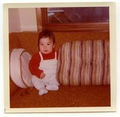
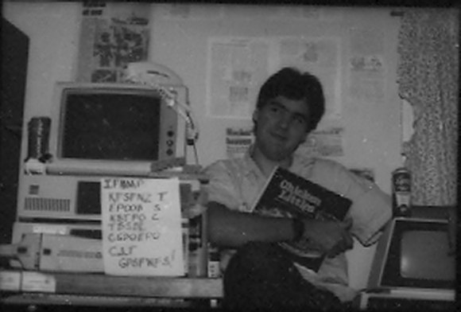
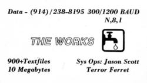

In which a kid is handed the world, and holds it for safekeeping
My name is Jason Scott Sadofsky. I was born in 1970 in Hopewell Junction, NY, a very small suburb
located near the not-so-small town of Fishkill and next to the not-at-all-small city of Poughkeepsie.
My parents lived in a subdivision very near an apple orchard and surrounded by hills, some distance
from the IBM Fabrication plant my father was employed at, first as an engineer and later as a manager.
I'm the oldest of three children, and found myself in a pretty idyllic life in a beautiful location,
surrounded by friends, family and all the time in the world. I had it good.

To be born in 1970 means I am younger than Woodstock, UNIX, moon landings, multi-track recording,
radio, and jukeboxes. I am older, however, than Saturday Night Live, Cell Phones, MTV,
VHS Videotape, the FOX television network, and compact discs. And what I was born at just the right
time for was what is now thought of as the Home Computer Revolution. Now ubiquitous, the idea of the
computer in the home, as an appliance or tool in the hands of anyone who wanted them, was an idea
that had a lot of people throwing their best efforts into making a reality. But it wasn't a reality yet.
Computers of any sizeable processing power were massive, expensive, specialized, and primarily the
realm of the forces most powerful and/or armed. It was not in the realm of families living in
pleasant suburbs, even if a member of the household worked at the world's largest semiconductor plant.
Somewhere in the late 1970s, however, life changed both outside and inside my home; my parents divorced
and I became one of those kids shuttled between two homes and with no single place to call my
own. Because of this I began a process of attending multiple schools and living in various places in
the New York Hudson Valley, depending on finances and opportunities out of my control. Outside my
now-changed home life was the reality of the home computer coming to life. Companies like Commodore,
Apple, Atari and dozens of others began producing electronic machines that could do all sorts of tasks
and produce all sorts of interest and entertainment to the type of people that would find such things
interesting and entertaining. I became the member of the family who connected with them, and my father,
eager to nourish any such interest, began bringing home computers from work for me to try.
My first home computer was a Commodore PET, a machine with 8 kilobytes of memory, less than the size of
this document. It had a small, attached screen, black and white, providing 40 columns of fixed text
and the ability to program it in the BASIC computer language. I was absolutely fascinated with it, a
love that has continued to the present day. My siblings were not quite as interested but for me this
was a true connection, something I really enjoyed playing with and learning on. And in what perhaps
indicates where my own history would take me, I still have this Commodore PET.
As the Commodore PET gained new friends over the years (my Atari 800 and IBM PC, Commodore Amiga,
and others), I gained a real interesting perspective on these machines. I saw them as they were when
they were new, young, hungry and fighting for market share, promising the universe for a few hundred
dollars and using all the marketing muscle they could to prove it. The advertisements they printed
were amazing, the magazine articles were fascinating, and I soaked it all in. This was a wondrous
time to be so young, a pre-teen learning about machines that would, with a few typed characters
(OK, a TON of typed characters) sing, dance, play games, and do amazing stuff for me. Having seen what
was before, I was always up for what was next.
On one of my visits to my father, he had to go into work for part of the day at his new position in the
Thomas J. Watson Research Center in Yorktown Heights, and took me along. To keep his son occupied, he
set me up in front of a terminal called the 3279x, a powerful and amazing machine that connected deep
into the IBM network and computing facilities. In comparison to what the home computers I owned had, this
was like taking someone who'd only ever ridden a bicycle and handing them the keys to a supersonic jet.
Naturally, I played games on it, games I couldn't ever hope to see on my machines at home, text adventures that challenged me intellectually, and even the engineering in-jokes of the programmers
at IBM, always looking for the next best place to eat or writing hilarious essays about life at IBM
or the engineering life. It was heavenly, but I knew when we logged out I'd never see anything like
that outside of my occasional visit to this amazing building.
Luckily, I was wrong.
I still remember the day, when I was visiting my friend Chris Boufford at the house he shared with his
grandparents, that he told me I had to check out what his grandfather had brought home.
It was a 300 baud acoustic modem, a strange little device with a couple strange pads on the top
and a wire going to the home computer his grandfather owned. Chris called a number he had written
down, placed the screaming telephone handset into the pads, and on the screen, text started to appear.
Text, I realized, that was coming from somewhere else. Text that was coming from another machine
to this one over the phone. I was 12. Nothing would be the same.
We were connecting to another person's home computer via this modem and phone line, and using software
that provided you with the ability to leave messages, read up on information, even acquire programs
you could run on your own computer without having to go to someone's house and copy their floppy disk
collection. It was a Computer Bulletin Board System, or BBS. There weren't many, but there were enough
that we could call into a bunch of places and get hooked. Naturally, I went home with visions of having
one of these modems and all this access into these computers from my own house.
Dad was accomodating, as he's always been. Through his connections I became the owner of a 2400 baud
Hayes Modem, a card that sat inside our IBM PC and let me call all over the county, state, and the
world and connect to all these BBSes. I was in heaven...
...for about a month, and then the $300 phone bill came in. Dad invented new ways to scream, and I
learned that I was going to have to do something about this if I wanted to continue to use these
bulletin board systems, so I started reading up and asking the right questions and found myself able
to get around the whole problem of paying large phone bills by stealing phone codes. I became what
I thought of as a "Phone Phreak", although the years hence have taught me that I was barely more than
a bottom-feeding leech, tracking down and gaining free telephone calls just to avoid paying money.
Learning and exploration was the last thing on my mind.
Or was it? As I started calling dozens and then hundreds of bulletin board systems, I found myself
constantly drawn to the strange conversations, the ability to download software, and the information
that was being presented in various menus. While the phone system (and these codes) were a tool to
get to the bulletin boards, on the boards themselves I began finding myself capturing, collecting
and saving on floppy disks all the information I could. Eventually, I had a lot of them indeed.
I've been asked at various times over the years why I started collecting these information files,
and I've hazed over various answers depending on the audience or the reason I was being asked. To be
honest, I'm still not sure, but perhaps the splitting of the family home, the lack of control as a
teenager in general, and the ability I was developing to read and sort information quickly all
combined into this instinct to collect, collect, collect. I would save everything I could to floppy
disks. If I didn't have a spare floppy disk, I'd turn on the printer and print out sheet after
form-fed sheet of the messages and writings of people. I would save up my money and buy more floppy
disks and trick cheaper single-sided floppy disks into using both sides, and off I'd go. I'd do it
for so long, that my father would wake up early in the morning and find his son hunched over the
computer, dawn light breaking into the computer room, and start screaming. (Luckily, his phone bill
didn't increase for all this use.)
The life I lived on the bulletin boards was full, rich, intellectual, and amazing. I met lifelong
friends, learned amazing things, and learned more about the world at large than the average teenager
of my time. I could recite area codes and where they were with ease. I'd hang out at the local mall
with people I'd met online. And when the time came, when I was ready, I started helping out with
a BBS in New Jersey as a co-sysop, an assistant administrator. This just whetted my appetite for the
ultimate goal - to run my own BBS. I knew what I'd call it: The Works. I even started labelling my
floppy disks with the name "The Works" to indicate where they'd one day end up.

This dream happened in 1986, when The Works BBS joined the online world. I needed to make my mark
and show how I was different from the now thousands-strong collection of BBSes out in the world,
so I declared myself a "textfile BBS", a place where programs wouldn't be allowed, only pure text
and writings. I used my collection of files from my years-saved floppies and offered my now-massive
archive to the world.
It was 5 megabytes.

My adventures of this time were many, and I wouldn't have traded my time with The Works for anything.
To talk about my own history with BBSes would fill a book - but the theme is clear: I had a
spectacular time, like a carnival and party everlasting, a sense of power and of happiness I've known
since then as one knows an old song. I'd do it all again, the delight, the tears, the discoveries,
the depressions. It was a part of what makes me what I am. It was who I was. It was my time with the
BBSes.
Naturally, it couldn't last forever.
See how the Internet changed me and everything else....
{kind=link}
{kind=link}